八、电位分析法 (210题)
一、选择题 ( 共53题 )
1. 2 分 (1122)
在直接电位法中的指示电极，其电位与被测离子的活度的关系为 ( )
(1) 无关 (2) 成正比
(3) 与其对数成正比 (4) 符合能斯特公式
2. 2 分 (1123)
M1| M1n+|| M2m+ | M2在上述电池的图解表示式中，规定左边的电极为( )
(1) 正极 (2) 参比电极 (3) 阴极 (4) 阳极
3. 2 分 (1124)
玻璃膜钠离子选择电极对钾离子的电位选择性系数为 0.002，这意味着电极对钠离子的
敏感为钾离子的倍数是 ( )
(1) 0.002 倍 (2) 500 倍 (3) 2000 倍 (4) 5000 倍
4. 1 分 (1125)
下列强电解质溶液在无限稀释时的摩尔电导l∞/S・m2・mol-1分别为：
��l∞(NH4Cl)=1.499×10-2，��l∞(NaOH)=2.487×10-2，��l∞(NaCl)=1.265×10-2，所以 NH3・H2O 溶液的 l∞(NH4OH) /S・m2・mol-1为 ( )
(1) 2.721×10-2 (2) 2.253×10-2 (3) 9.88 ×10-2 (4) 1.243×10-2
5. 2 分 (1126)
钾离子选择电极的选择性系数为 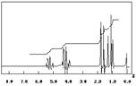
10-5mol/L K+，浓度为 1.0×10-2mol/L Mg溶液时，由 Mg引起的 K+测定误差为( )
(1) 0.00018% (2) 134% (3) 1.8% (4) 3.6%
6. 2 分 (1133)
利用选择性系数可以估计干扰离子带来的误差，若 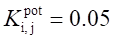
0.1mol/L，被测离子的浓度为 0.2mol/L，其百分误差为(i、j均为一价离子) ( )
(1) 2.5 (2) 5 (3) 10 (4) 20
7. 2 分 (1134)
电池，Ca（液膜电极）│Ca2+(a = 1.35×10-2mol/L) || SCE 的电动势为0.430V, 则
未知液的 pCa 是 ( )
(1) -3.55 (2) -0.84 (3) 4.58 (4) 7.29
8. 2 分 (1135)
下列说法中正确的是:
晶体膜碘离子选择电极的电位 ( )
(1) 随试液中银离子浓度的增高向正方向变化;
(2) 随试液中碘离子浓度的增高向正方向变化;
(3) 与试液中银离子的浓度无关;
(4) 与试液中氰离子的浓度无关.
9. 2 分 (1136)
下列说法中，正确的是
氟电极的电位 ( )
(1) 随试液中氟离子浓度的增高向正方向变化;
(2) 随试液中氟离子活度的增高向正方向变化;
(3) 与试液中氢氧根离子的浓度无关;
(4) 上述三种说法都不对;
10. 2 分 (1137)
玻璃膜钠离子选择电极对氢离子的电位选择性系数为 100，当钠电极用于测定1×10-5
mol/L Na+时，要满足测定的相对误差小于 1%，则试液的 pH 应当控制在大于( )
(1) 3 (2) 5 (3) 7 (4) 9
11. 2 分 (1138)
离子选择电极的电位选择性系数可用于 ( )
(1) 估计电极的检测限 (2) 估计共存离子的干扰程度
(3) 校正方法误差 (4) 计算电极的响应斜率
12. 2 分 (1139)
用氯化银晶体膜离子选择电极测定氯离子时，如以饱和甘汞电极作为参比电极，应选用
的盐桥为： ( )
(1) KNO3 (2) KCl (3) KBr (4) KI
13. 2 分 (1140)
用离子选择电极标准加入法进行定量分析时，对加入标准溶液的要求为 ( )
(1) 体积要大，其浓度要高 (2) 体积要小，其浓度要低
(3) 体积要大，其浓度要低 (4) 体积要小，其浓度要高
14. 2 分 (1141)
在电位滴定中，以 DE/DV－V（j为电位，V 为滴定剂体积）作图绘制滴定曲线, 滴
定终点为： ( )
(1) 曲线的最大斜率（最正值）点
(2) 曲线的最小斜率（最负值）点
(3) 曲线的斜率为零时的点
(4) DE /DV 为零时的点
15. 1 分 (1143)
在电导滴定中，通常使滴定液的浓度比被测液的浓度大 10 倍以上，这是为了( ).
(1) 防止温度影响 (2) 使终点明显
(3) 防止稀释效应 (4) 使突跃明显
16. 1 分 (1146)
比较不同电解质溶液导电能力的参数是 ( )
(1) 电导 (2) 电导率 (3) 电阻率 (4) 摩尔电导
17. 2 分 (1147)
在含有 Ag+、Ag(NH3)+ 和 Ag(NH3)2+ 的溶液中，用银离子选择电极，采用直接电位法
测得的活度是 ( )
(1) Ag+ (2) Ag(NH3)+ (3) Ag(NH3)�� (4) Ag + Ag(NH3)+ + Ag(NH3)��
18. 1 分 (1148)
在用电导法测定一个电导率很低的有机胺溶液时，最好选用 ( )
(1) 镀 Pt 黑电导池 (2) 分压电导仪
(3) 低频电源 (4) 直流电源
19. 2 分 (1156)
使 pH 玻璃电极产生钠差现象是由于 ( )
(1) 玻璃膜在强碱性溶液中被腐蚀
(2) 强碱溶液中 Na+ 浓度太高
(3) 强碱溶液中 OH- 中和了玻璃膜上的 H+
(4) 大量的 OH- 占据了膜上的交换点位
20. 2 分 (1157)
pH 玻璃电极产生的不对称电位来源于 ( )
(1) 内外玻璃膜表面特性不同
(2) 内外溶液中 H+ 浓度不同
(3) 内外溶液的 H+ 活度系数不同
(4) 内外参比电极不一样
21. 2 分 (1158)
下述滴定反应： 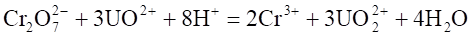
方法为 ( )
(1) 电导滴定 (2) 电位滴定 (3) 库仑滴定 (4) 均不宜采用
22. 1 分 (1159)
温度升高时，溶液的电导率 ( )
(1) 降低 (2) 升高 (3) 不变 (4) 变化不大
23. 1 分 (1171)
电导率为 10 S/m 相当于电阻率为 ( )
(1) 0.01W・m (2) 10W・m (3) 0.1W・m (4) 1 kW・m
24. 2 分 (1172)
氟化镧单晶膜氟离子选择电极的膜电位的产生是由于 ( )
(1) 氟离子在晶体膜表面氧化而传递电子
(2) 氟离子进入晶体膜表面的晶格缺陷而形成双电层结构
(3) 氟离子穿透晶体膜而使膜内外氟离子产生浓度差而形成双电层结构
(4) 氟离子在晶体膜表面进行离子交换和扩散而形成双电层结构
25. 2 分 (1219)
离子强度对活度常数 的影响是 ( )
(1)
使 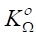
(3) 减小到一定程度趋于稳定 (4) 无影响
26. 1 分 (1253)
在金属电极(如Ag/AgNO3)中, 迁越相界面的只有 ( )
(1) 金属离子 (2) 氢离子
(3) 硝酸根离子 (4) 负离子
27. 2 分 (1255)
pH玻璃电极在使用前一定要在水中浸泡几小时, 目的在于 ( )
(1) 清洗电极 (2) 活化电极
(3) 校正电极 (4) 除去沾污的杂质
28. 2 分 (1256)
在实际测定溶液 pH 时, 都用标准缓冲溶液来校正电极, 目的是消除 ( )
(1) 不对称电位 (2) 液接电位
(3) 不对称电位和液接电位 (4) 温度影响
29. 1 分 (1906)
用pH玻璃电极测定pH约为12的碱性试液，测得pH比实际值 （ ）
（1）大 （2）小 （3）两者相等 （4）难以确定
30. 1 分 (1907)
A离子选择电极的电位选择系数 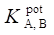
（1）B干扰离子的干扰越小 （2）B干扰离子的干扰越大
（3）不能确定 （4）不能用此电极测定A离子
31. 1 分 (1908)
设玻璃电极的内阻高达108W为了使电位法测量误差在0.1％以内，离子计的输入 阻抗应（ ）
（1）≥1011Ω （2）≥1010Ω （3）≥109Ω�� （4）无要求
32. 1 分 (1909)
离子选择电极测量所产生的浓度的相对误差 （ ）
（1）只与离子的价数有关
（2）只与测量的电位有关
（3〕与离子价数和浓度有关
（4）与离子价数和测量电位有关；而与测量体积和离子浓度无关
33. 1 分 (1910)
氨气敏电极的电极电位 （ ）
（1）随试液中NH4+ 或气体试样中NH3的增加而减小
（2）与（1）相反
（3）与试液酸度无关
（4）表达式只适用于NH4+试液
34. 1 分 (1911)
氟离子选择电极在使用前需用低浓度的氟溶液浸泡数小时，其目的（ ）
（1）清洗电极 （2）检查电极的好坏
（3）活化电极 （4） 检查离子计能否使用
35. 1 分 (1912)
电位分析法需要测定电池电动势或电极电位，其测定条件 （ ）
（1）电池的电动势或电极电位要稳定
（2）电池的内阻需很大
（3）通过电池的电流为零
（4）电池的内阻要小，通过的电流很大
36. 1 分 (1913)
离子选择电极中用电位滴定法测定浓度时产生的误差比电位法中的标准曲线法（ ）
（1）大 （2）小 （3）差不多 （4）两者都较小
37. 2 分 (1942)
中性载体电极与带电荷流动载体电极在形式及构造上完全相同。它们的液态载体 都是可以自由移动的。它与被测离子结合以后，形成 （ ）
（1）带电荷的化合物，能自由移动
（2）形成中性的化合物，故称中性载体
（3）带电荷的化合物，在有机相中不能自由移动
（4）形成中性化合物，溶于有机相，能自由移动
38. 2 分 (1943)
卤化银粉末压片膜制成的电极对卤素离子能产生膜电位是由于 （ ）
（1）卤素离子进入压片膜的晶格缺陷而形成双电层
（2）卤素离子在压片膜表面进行离子交换和扩散而形成双电层
（3）Ag+进入压片膜中晶格缺陷而形成双电层
（4）Ag+的还原而传递电子形成双电层
39. 2 分 (1944)
pH玻璃电极产生酸误差的原因是 （ ）
（1）玻璃电极在强酸溶液中被腐蚀
（2）H+度高，它占据了大量交换点位， pH值偏低
（3）H+与H2O形成H3O+，结果H+降低， pH增高
（4）在强酸溶液中水分子活度减小，使H+ 传递困难，pH增高
40. 1 分 (1945)
用氟离子选择电极测定水中F－含量时，需加入TISAB溶液，此时测得地结果是（ ）
（1）水中F－的含量 （2）水中游离氟的总量
（3）水中配合物中氟的总量 （4）（2）和（3）的和
41. 2 分 (1946)
电位法测定时，溶液搅拌的目的（ ）
（1）缩短电极建立电位平衡的时间
（2）加速离子的扩散，减小浓差极化
（3）让更多的离子到电极上进行氧化还原反应
（4）破坏双电层结构的建立
42. 1 分 (1947)
离子选择电极的电位选择性系数 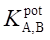
（1）A离子干扰B离子的情况 （2）B离子干扰A离子的情况
（3）A，B离子相互干扰的情况 （4）离子电极的检出下限
43. 1 分 (1948)
流动载体电极的检出限决定于（ ）
（1）响应离子的迁移数的大小
（2）电活性物质在有机相和水相中分配系数的大小
（3）载体电荷的大小
（4）电活性离子电荷的大小
44. 1 分 (1949)
Ag2S和AgX(X=Cl―,Br―,I―)晶体压片制成的离子选择电极的检出限决定于（ ）
（1）各自的溶度积Ksp的大小 （2）晶格缺陷的情况
（3）压片后膜电阻的大小 （4）测定条件决定
45. 2 分 (1950)
离子选择电极内参比溶液的组成要考虑到（ ）
（1）有敏感膜响应的离子
（2）有能与内参比电极形成稳定电位的离子
（3）（1）和（2）都要考虑
（4）能导电的电解质溶液
46. 2 分 (1951)
玻璃电极的活化是为了（ ）
（1）清洗电极表面 （2）降低不对称电位
（3）更好地形成水化层 （4）降低液接电位
47. 2 分 (1952)
用银离子选择电极作指示电极，电位滴定测定牛奶中氯离子含量时，如以饱和甘汞电极作为参比电极，双盐桥应选用的溶液为 （ ）
（1）KNO3 （2）KCl （3）KBr （4）KI
48. 2 分 (1953)
碘化银晶体膜电极在测定氰离子时，其电极电位 （ ）
（1）随试液中银离子浓度的增高向负方向变化
（2）随试液中碘离子浓度的增高向正方向变化
（3）随试液中氰离子浓度的增高向负方向变化
（4）与试液中银离子浓度无关
49. 2 分 (1954)
某离子选择电极对一价的A和B离子都有响应，但aB100倍于aA时，B离子提供的电位与A离子提供的相等。的值为 ( )
(1) 0.1 (2) 0.01 (3) 10 (4) 100
50. 1 分 (1955)
某电极主要响应的是A离子，但B离子有干扰，其电位表达式应为（ ）
（1） 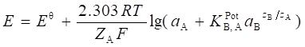
（2） 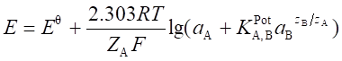
（3） 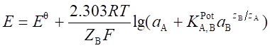
（4） 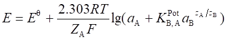
51. 2 分 (1956)
离子选择电极产生膜电位，是由于 （ ）
（1）扩散电位的形成 （2）Donan电位的形成
（3）扩散电位和Donan电位的形成 （4）氧化还原反应
52. 1 分 (1957)
在电位分析中测量的化学电池的参数是 （ ）
（1）电池的端电压 （2）电池的电动势
（3）电池的U与I的变化 （4）电池的IR降
53. 2 分 (1958)
Ag2S的AgX（X＝Cl－，Br－，I－）混合粉末压成片，构成的离子选择电极能响应
的离子有 （ ）
（1）卤素 和S2－ （2）Ag＋
（3）卤素，S2－， Ag＋ （4）S2－
二、填空题 ( 共79题 )
1. 2 分 (2010)
aj 10 倍于 ai时,j
离子所提供的电位才等于 i 离子所提供的电位，此时 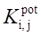
2. 2 分 (2031)
离子选择电极电位的修正公式为：
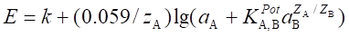
(1) 若 << 1 该电极的主要响应离子为______________
(2) 若 >> 1 该电极的主要响应离子为_______________
3. 2 分 (2035)
玻璃电极的膜电位与试液中 pH的关系的数学表达式为 _____________ 。
4. 2 分 (2039)
用 AgBr - Ag2S 混晶膜制成的离子选择性电极，一般用作测定______________, 其膜电
位公式为 _____________________________ 。
5. 2 分 (2041)
pH玻璃电极对某种离子有响应，可用 ________ 理论来解释。液膜电极可分为
_______________ 等种。
6. 2 分 (2063)
在 1 mol/L H2SO4介质中，以 Pt 为指示电极，用 0.1000 mol/L Ce4+的标准溶液滴定
25.00 mL Fe2+ ，当滴定完成 50% 时，Pt 电极的电位为 ________ 。
7. 2 分 (2064)
用钾离子选择电极测定某试液中 K+ 的含量（该试液中还含有 Ca2+），则钾离子选择
电极的电位可表示为 _________ 。
8. 2 分 (2073)
用AgNO3溶液滴定水中微量Cl-时,电位滴定的指示电极是 _____________.
9. 2 分 (2075)
电解分析时,由于电极反应引起的浓差极化使阴极电位向 ____________.
10. 2 分 (2086)
pH 玻离电极在使用前必须用 _____________ 浸泡.
11. 2 分 (2087)
以pH 电极为指示电极时, 可测定 ______________ 浓度.
12. 2 分 (2088)
Br-离子选择电极有Cl-离子干扰时,选择系数可写作: ______________.
13. 2 分 (2111)
pH玻璃电极的钠差是由于 _________________________________ 引起的误差.
14. 2 分 (2112)
氧化还原电位滴定法中常用的指示电极为____________ 电极.
15. 2 分 (2113)
离子选择电极的电位选择性系数可写作: _______________.
16. 2 分 (2246)
电解时还原反应发生在 _____________ 极.
17. 2 分 (2248)
化学电池的阴极上发生 ___________ 反应.
18. 2 分 (2249)
将直流电通入食盐水的烧杯中,两个电极上的反应产物是 _______________ .
19. 2 分 (2250)
用氟离子滴定铝离子时,应选用 ______________ 指示电极.
20. 2 分 (2251)
用NaOH滴定H2C2O4的滴定体系中,应选用 _________ 指示电极.
21. 2 分 (2252)
用银离子滴定S2- 离子的滴定体系中,应选用 __________ 指示电极.
22. 2 分 (2257)
pH玻璃电极的膜电位的产生是由于 ________________________ 作用.
23. 2 分 (2843)
电位法是在溶液平衡体系不发生变化的条件下进行测定, 测得的是________________量; 电位滴定法测得的是______________________量。
24. 2 分 (2844)
离子选择电极电位测量的误差与浓度间关系可作式_________________________表示, 电位滴定法测定浓度的误差比标准曲线法____________。
25. 2 分 (2845)
任何一支离子选择电极不可能只对某一特定离子有响应, 因此, 该电极的能斯特 方程式应用___________________________来表示。
26. 5 分 (2846)
离子选择电极中电位选择系数可用__________法和____________法来测定。对一价 阳离子，前者的表达式___________________, 后者的表达式_____________________。
27. 2 分 (2847)
离子选择电极中, 若用标准加入法测定未知浓度, 简化的表达式为________________,应用此公式应满足_____________________________________________________。
28. 5 分 (2848)
用直读法测定试液的pH值, 其操作定义可用式_____________________来表示。用pH 玻璃电极测定酸度时, 测定强酸溶液时, 测得的pH比实际数值_______, 这种现象称为 ________。测定强碱时, 测得的pH值比实际数值______, 这种现象称为__________。
29. 5 分 (2849)
用Gran作图法测定试液的浓度, 它既适用于____________法, 也适用于_____________法。它需进行空白试验, 其目的___________________________________________
。
30. 5 分 (2850)
用氟离子选择电极的标准曲线法测定试液中F-浓度时, 对较复杂的试液需要加入____________试剂, 其目的有第一____________________________________; 第二_______________________________________________;第三_____________________ _________________________。
31. 2 分 (2892)
测定电位时，溶液搅拌速度应恒定，因为速度快慢会影响 。
32. 2 分 (2893)
液膜电极的载体是可_____________, 但不能__________膜, 而抗衡离子可________膜, 所以它又称为__________电极。
33. 2 分 (2894)
用pH计测定溶液pH时, 定位操作是用来消除__________________的影响, 温度调节 是用来校正温度引起的___________________的变化。
34. 2 分 (2895)
pH玻璃电极测量溶液pH时, 碱差(或钠差)现象是指
的现象；酸差是指______________________________的现象。
35. 2 分 (2896)
离子选择电极的内阻主要来自_________________________________,它直接决定测定配用的离子计_______________________的大小。
36. 2 分 (2897)
离子选择电极的选择性系数 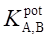
能力。系数越小表明_______________________________________________。
37. 2 分 (2898)
离子选择电极的级差是_________________________________,
单位是________________________。
38. 2 分 (2899)
根据IUPAC的推荐, 离子选择电极可分为原电极, 如_____________, _____________; 敏化离子选择电极, 如_____________, ________________等两类。
39. 2 分 (2900)
在电位分析中, 溶液搅拌是为了___________________________________________;
而电解和库化分析中是为了____________________________________________。
40. 2 分 (2901)
在电位分析测量时, 产生+1mV的读数误差, 它能引起离子活度的相对误差对一价离子为 ________________, 对二价离子为_____________________。
41. 2 分 (2902)
由pH玻璃电极和饱和甘汞电极组成的电池测量溶液的pH时, 电池的电动势______形成的膜电位, ______________________形成的不对称电位, _______________________的液接电位以及饱和甘汞电极的电位组成。
42. 2 分 (2903)
氢离子玻璃膜选择电极对钠离子的选择性系数为 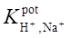
43. 2 分 (2904)
当用钾离子选择电极测定2.0×10-5mol/LK+时, 由于溶液中有1.0×10-2mol/L的Mg2+, 引起K+测定误差为0.9%, 则 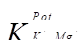
44. 2 分 (2905)
某电极对干扰离子的 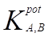
为0.10mol/L, 被测离子浓度为0.02mol/L~0.04mol/L,由于干扰产生的误差的百分范围为____________。
45. 2 分 (2906)
碘化银离子选择电极的电位随碘离子浓度的增大而____________, 随银离子浓度的增大而__________, 随氰离子浓度的增大而____________。
46. 2 分 (2907)
玻璃膜钠离子选择电极对氢离子的敏感度是对钠离子的100倍, 当钠电极用于测定
1.0×10-4mol/L的Na+离子时, 要满足测定的相对误差小于1%, 则试液pH应当控制在 pH____。
47. 2 分 (2908)
离子选择电极的电位选择性系数表示该电极对各种不同离子的________________, 因此, 它可以用来估计共存离子的_________________________________。
48. 2 分 (2909)
盐桥的作用是______________________, 选择盐桥中电解质的条件
_____________________和__________________。
49. 2 分 (2910)
离子选择电极用标准加入法进行定量分析时, 对加入的标准溶液要求体积要________, 浓度要_____目的是____________。
50. 2 分 (2911)
在电位滴定中, 几种确定滴定终点的方法之间的关系是, 在E~V图上的________就是 其一次微商的______________也是其二次微商_____________________。
51. 2 分 (2912)
在测定溶液的pH值时, 使用标准缓冲溶液来校准pH计, 其目的是校准__________和 __________电位对测定结果的影响。
52. 2 分 (2913)
氟化镧单晶膜氟离子选择电极的膜电位产生是由于____________________________。
53. 2 分 (2914)
在直接电位法中, 化学电池的两个电极分别称为__________和____________电极。
54. 1 分 (2915)
玻璃膜钠离子选择电极对钾离子的电位选择系数为0.002, 这表明钠离子对电位的贡献 是钾离子的__________________倍。
55. 2 分 (2916)
氟离子选择电极测定水中氟时, 使用了TISAB溶液, 它的各组分作用为:
KNO3_____________HAc-NaAc_________________, K3Cit(柠檬酸钾)_____________。
56. 2 分 (2917)
玻璃电极在使用前一定要在水中浸泡数小时, 其目的是___________形成__________。
57. 5 分 (2918)
在电化学分析方法中, 由于测量电池的参数不同而分成各种方法: 测量电动势为_____________________; 测量电流随电压变化的是_________________, 其中若使用_______________电极的则称为_________________________;测量电阻的方法称为__________________________; 测量电量的方法称为_________________________。
58. 1 分 (2919)
在电位滴定法中, 用Ce4+溶液滴定Fe2+可使用的指示电极是_____________________。
59. 1 分 (2920)
在电位滴定法中, 用AgNO3溶液滴定I―可使用的指示电极是________________。
60. 1 分 (2921)
pH理论定义的表达式是____________________________。
61. 2 分 (2922)
当使用玻璃电极|被测溶液(aH+=X)‖SCE的电池进行pH测定时, pH的实用定义表达式为_______________, 式中符号分别表示___________________________。
62. 2 分 (2923)
电位分析中, 指示电极电位将随____________而变化, 参比电极的电位不受______的影响。
63. 2 分 (2924)
离子选择电极中, 晶体膜电极, 其膜电位的产生是由于溶液中待测离子_______________而膜相中的晶格缺陷上的离子_________________, 因而在两相界面上建立双电层结构。
64. 2 分 (2925)
气敏电极是一种气体传感器, 能用于测定溶液中___________的含量, 在电极构造上与 一般电极不同, 它实际上是一个_______________________。
65. 2 分 (2926)
玻璃电极的膜电阻一般为108Ω, 在电位测量中, 为使测量精度达0.1%, 其测量仪器的 pH计输入阻抗至少应为____________。
66. 2 分 (2927)
液接电位的产生是由于_______________经过两个溶液的界面时, 具有______________ 而产生的电位。
67. 2 分 (2928)
用饱和甘汞电极为参比电极, 铂电极为指示电极, 以KMnO4滴定Mn2+其反应为:
MnO4-+4H++3e-MnO2+2H2O
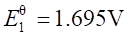 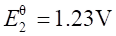
在滴定的每一点, j, j1, j2的关系为_______________________。
68. 2 分 (2929)
在流动载体电极中, 响应离子的_________大, 电极的选择性好, 电活性物质在有机相 和水相的______________决定电极的检出限, ______________大, 检出限低。
69. 2 分 (2930)
流动载体电极又称液膜电极, 它的载体是可流动的, 但不能离开膜, 而抗衡离子可以自由穿过膜,由带正电荷的载体制成_________流动载体电极, 带负电荷的制成____________ 流动载体电极, 不带电荷的制成___________流动载体电极。
70. 2 分 (2931)
由Ag2S和AgX(X-=Cl―, Br―, I―)以及Ag2S和MS(M2+=Cu2+, Pb2+, Cd2+)粉末压片制成的 离子选择电极, 膜内电荷的传递者是__________, 它们的检出下限与____________有关。
71. 5 分 (2932)
正负离子都可以由扩散通过界面的电位称为____________, 它没有__________ 性和 ________性, 而渗透膜, 只能让某种离子通过, 造成相界面上电荷分布不均, 产生双电层, 形成__________电位。
72. 5 分 (2933)
由LaF3单晶片制成的氟离子选择电极, 晶体中________是电荷的传递者, ________是 固定在膜相中不参与电荷的传递, 内参比电极是________________, 内参比电极由 _____________________组成。
73. 2 分 (2934)
离子选择电极的选择性系数可以由____________法和__________法测定, 其中, 干扰离子和待测离子共存于同一溶液中的称为_____________法, 它与实际情况较接近。
74. 2 分 (2935)
直接电位法是在溶液平衡体系不发生变化的条件下进行测定的, 测得的是物质___________量, 电位滴定法测得的是物质的____________________量。
75. 2 分 (2936)
离子选择电极的电位选择系数 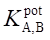
76. 5 分 (2937)
电位分析是在___________条件下测定电池的电动势, 理论上讲, 它____________ 极化现象, 但___________离子平衡过程, 搅拌的作用是_______________________。
77. 2 分 (2938)
电位法测量常以____________________作为电池的电解质溶液, 浸入两个电极, 一个是 指示电极, 另一个是参比电极, 在零电流条件下, 测量所组成的原电池______________。
78. 2 分 (4529)
用离子选择电极测定F-浓度时, 加入离子强度调节缓冲剂的目的是______________、
___________________和___________________________。
79. 2 分 (4530)
在电位分析中, 搅拌溶液是为了______________________. 浓度越低, 电极响应的时间
_______________________。
三、计算题 ( 共50题 )
1. 10 分 (3003)
将一玻璃膜钠离子选择电极和一饱和甘汞电极与一台 pH 计相联。当将电极浸在活度 a = 0.100mol/L 的 NaCl 溶液中时，测得电动势为 67.0 mV; 当将电极浸在相同活度的 KCl 溶液时，测得的电动势为 113.0mV，(饱和甘汞电极的电位为0.246V)
(1) 试求选择性系数 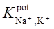
(2) 若将电极浸在含 NaCl (a = 1.00×10-3 mol/L) 和 KCl (a = 1.00×10-2 mol/L) 的溶液中，测得的电动势将为何值。
2. 10 分 (3004)
(1) 某含氟溶液 20.00 mL, 用氟离子选择电极测得其相对于某参比电极的电位是 0.3400V。 加入 4.00mL 0.0100moL/L 氟化钠溶液后再测量得到的氟电极电位是0.3100V。试求含氟溶液中原始氟离子的浓度。(假定所给含氟溶液和标准溶液中都有适量的总离子强度调节缓冲剂，不考虑液接电位的变化)
(2) 今假定允许用于测量的含氟溶液体积只有 0.5mL,要用同样的实验设备进行测量，请你设计一个实验步骤, 把原始含氟溶液中的离子浓度测量出来。写出必要的计算式并作简要说明。
3. 10 分 (3005)
一个含 4.00 mmol M2+的溶液用 X-来滴定。滴定反应为
M2+ + X- ＝ MX+
在计量点时，下述电池
Hg│Hg2Cl2(s),KCl（饱和）|| M2+│M
的电动势为 0.030V。已知半电池反应 M2+ + 2e-─→ M 的标准电位Eq = 0.480V，饱和甘
汞电极的电位为 0.246V，计量点时溶液体积为 100mL，试计算配合物 MX 的稳定常数。
4. 10 分 (3014)
以氢电极为负极，摩尔甘汞电极为正极，插入一浓度未知的盐酸溶液中，测得该电池
的电动势为 0.322V。当以同样的电极插入一浓度未知的氢氧化钠溶液中，测得电池的电动
势为 1.096V。如果还是以同样的电极插入这种酸和碱的 100mL 的混合溶液中，测得电动
势为 1.036V。问该混合溶液中盐酸和氢氧化钠各占多少毫升？
已知：EqSCE = +0.285V。
5. 10 分 (3015)
(1) 已知 CuBr 的溶度积常数为 5.9×10-9，计算下述半电池反应的标准电位。
CuBr + e-＝ Cu + Br-；
已知 Cu++ e-= Cu 的 �搦� Eq= 0.521V (vs.SHE)
(2)写出电池表达式，其中饱和甘汞电极为参比电极，铜电极为指示电极（该电极可用作测定 Br-的第二类电极）。
(3) 如果 (2) 中电池的电动势测得为 0.076V，计算与 Cu 电极相接触的溶液中的pBr 值。
6. 10 分 (3016)
在 25℃时，下列电池的电动势为 -0.372V，
Ag│AgAc(s)│Cu(Ac)2(0.1mol/L)│Cu
(1) 写出电极反应和电池反应；
(2) 计算乙酸银的溶度积。
已知：Eq (Cu2+/Cu) = +0.337V， Eq（Ag+/Ag） = +0.799V
7. 10 分 (3018)
忽略离子强度影响，计算下列电池电动势。
Ag,AgCl│KCl(0.1mol/L),NaF(0.001mol/L)│LaF3单晶膜│NaF(0.1mol/L)|| SCE
已知：甘汞电极电位 0.2445V，�搦�Eq (Ag/AgCl) = 0.222V。
8. 10 分 (3020)
在钠离子存在下用钙离子选择电极测定钙。以钙电极接 pH 计的负极，饱和甘汞电极接正极，在 0.0100mol/L CaCl2溶液中（活度系数 f1=0.55）测得电动势为 195.5mV，在含0.0100mol/L CaCl2和 0.0199mol/L NaCl 的混合溶液中（两种物质的活度系数分别为f2=0.51，f3=0.83）测得电动势为 189.2mV。今有一含钙的未知液，其中 Na+的活度用钠离子选择电极测得为 0.0120mol/L，若在此溶液中电池的电动势等于 175.4mV，试求未知液中 Ca2+的活度（测量温度为 25℃）。
9. 10 分 (3022)
用 Ag 电极及饱和甘汞电极以 0.01mol/L AgNO3滴定 0.01mol/L CN-，Ag(CN)的不稳定常数为 K = 3.8×10-19，求计量点时的电池电动势。
已知：甘汞电极电位为 0.2445V，�搦�jq (Ag+/Ag) = 0.7995V。
10. 10 分 (3023)
准确移取 50.00mL 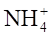 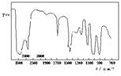
11. 5 分 (3027)
某 pH 计，按指针每偏转一个 pH 单位而电位改变 60mV 的标准设计，若仪器无斜率补偿，今用响应斜率为 50mV 的 pH 玻璃电极来测定 pH 3.00 的溶液，用 pH 4.00的溶液校正（定位），测得的结果误差有多大？
12. 10 分 (3029)
当用 Cl-选择电极测定溶液中 Cl-浓度时，组成如下电池，测得电动势为 0.316V 在测未知溶液时，得电动势值为 0.302V。
Cl-电极│Cl-(2.5×10-4 mol/L) 溶液 || SCE
(1) 求未知液中 Cl-浓度
(2) 如已知该电极的选择系数 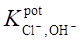
13. 5 分 (3030)
当以 SHE（标准氢电极）为参比电极时，指出测定下述物质时，该用何种指示电极？排出组成的化学电池形式，推导出 pX 和Eq的关系式。
(1) pI，已知 ([I-] = 1.0×10-4 mol/L , Eq (I2/2I-) = 0.621V
(2) pC2O4，已知 Ksp(Ag2Cr2O4) = 3.5×10-11 , Eq (Ag+/Ag) = 0.799V
14. 10 分 (3034)
一自动电位滴定仪以 0.1mL/s 的恒定速度滴加滴定剂。按设计要求，当二次微分滴定曲线为零时，仪器自动关闭滴液装置，但由于机械延迟，使关闭时间晚了 2s。如果用这台滴定仪以 0.1mol/L 的 Ce(IV) 来滴定 50mL 0.1mol/L 的 Fe(II)，由于延迟将引起多大的百分误差？当滴定仪关闭时，电位将是多少？
已知(Eq [Ce(IV)/Ce(III)] = 1.28V )。
15. 10 分 (3035)
在用 Cu2+ 离子电极测定如下组成的电池时，得电动势值为 0.113V，
Cu2+离子电极│Cu(1.5×10-4 mol/L)溶液体积 20mL || SCE
向溶液中加入5mL NH3溶液,使待测液中 NH3浓度保持为 0.1mol/L，这时测得电动势值为 0.593V，试求铜氨配离子 [Cu(NH3)32+] 的不稳定常数。
16. 10 分 (3036)
如用饱和甘汞电极为参比电极，铂电极为指示电极，以KMnO4滴定 Mn2+��(计量点时[H+]= 1.00×10-8 mol/L)。为进行自动电位滴定，请算出计量点时应控制终点电位值为多少? (vs.SCE)
MnO42+ + 4H++ 3e-＝ MnO2+ 2H2O �搦� Eq1 =1.695V
MnO2+ 4H++ 2e-＝ Mn2+ + 2H2O �� ��Eq2 =1.23V
17. 5 分 (3037)
已知 H2BO3在无限稀释情况下，摩尔电导率为 3.0 mS.m2/mol，在池常数为 6.9/m 的电导池中测定 0.04mol/L H3BO3电导值为 0.55×10-4 S，试求 H3BO3的解离度a和解离常数 Ki各为多少？
（水的电导率为 20.0 mS/m，H+摩尔电导率为 34.98 mS.m2/mol）
18. 5 分 (3038)
由 Cl-浓度为 1mol/L 的甘汞电极和氢电极组成一电对，浸入 100mL HCl 试液中。已知摩尔甘汞电极作阴极，电极电位为 0.28V，Eq (H+/ H2)= 0.00V，氢气分压为 101325Pa。Ar(H) = 1.008，Ar(Cl) = 35.4 该电池电动势为0.40V。
(1) 用电池组成符号表示电池的组成形式；
(2) 计算试液含有多少克 HCl。
19. 5 分 (3041)
由 AgCl - Ag2S 混晶膜制成的氯离子选择电极，已知其选择性系数 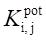
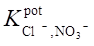
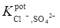
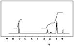
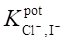
试回答在测定 [Cl-] = 1×10-4 mol/L 时，如果允许误差为 5%，若共存KNO3或 K2SO4时，物质的最大容许浓度是多少？
20. 5 分 (3042)
将氯离子选择性电极和饱和甘汞电极接成如下电池：
SCE||Cl-(X mol/L)│ ISE
试推导标准加入法测定氯离子的计算公式。
21. 5 分 (3043)
导出 Donnan （道南）电位的表达式。
22. 10 分 (3045)
晶体膜氯电极对 CrO42-选择性系数为 0.002，H2CrO4的 Ka1= 0.18, Ka2= 3.2×10-7 。当氯电极用于测定 pH = 6 的 0.01 mol/L 铬酸钾溶液中的5×10-4 mol/L 氯离子时，不考虑离子强度的影响，估计方法的相对误差为多大？
23. 10 分 (3046)
氟离子选择电极的内参比电极为 Ag─AgCl，内参比溶液为 0.1mol/L NaCl 与 0.001mol/L NaF，不考虑离子强度的影响，计算它在 1×10-5 mol/L，pH = 10 的试液中的电位。Eq(AgCl/Ag) = +0.222V， 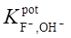
24. 10 分 (3047)
硫化银膜电极以 Ag 丝为内参比电极，0.01mol/L AgNO3为内参比溶液，E q (AgCl/Ag) = +0.80V，Ksp(Ag2S) = 2×10-49, 不考虑离子强度的影响，计算硫化银膜电极在 0.0001mol/L S2-碱性溶液中的电极电位 (25℃)。
25. 5 分 (3048)
用 pH 玻璃电极测定 pH = 5.0 的溶液，其电极电位为 +0.0435V；测定另一未知试液
时电极电位则为 +0.0145V，电极的响应斜率每 pH 改变为 58.0mV，求此未知液的 pH值。
26. 10 分 (3049)
已知下列半电池反应及其标准电极电位：
HgY2-+2 e-= Hg + Y�� ��E q1= +0.21V
Hg2++ 2e-= Hg �搦�E q2 +0.845V
计算配合物生成反应： Hg2+ + Y4- = HgY2- 的稳定常数 K 的对数值。(25℃)
27. 10 分 (3057)
某钠离子选择电极其 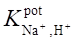
28. 10 分 (3130)
用 0.1mol/L 硝酸银溶液电位滴定 0.005mol/L 碘化钾溶液，以全固态晶体膜碘电极为指示电极，饱和甘汞电极为参比电极。碘电极的响应斜率为 60.0mV，E q(AgI/Ag) = -0.152V，AgI 的 Ksp = 9.3×10-17, E q(SCE)= +0.224V。计算滴定开始时和计量点时的电池电动势，并标明电极的正负。
29. 5 分 (3554)
电位法测量常以____________________作为电池的电解质溶液, 浸入两个电极, 一个是 指示电极, 另一个是参比电极, 在零电流条件下, 测量所组成的原电池______________。
30. 5 分 (3558)
硝酸根离子选择电极在1.00×10－3mol/L NO3－溶液中测得的电位值为-120.4mV，在 含1.00×10－3mol/L的NO3－和1.0×10－3mol/L的Cl－溶液中测得电位值为-122.8mV，该电极的实际斜率为58mV/pNO3－，试计算该电极的电位选择性系数。
31. 5 分 (3559)
用氟离子选择电极测定牙膏中的F－含量，称取0.205g牙膏，并加入50mLTISAB试剂， 搅拌微沸冷却后移入100mL容量瓶中，用蒸馏水稀释至刻度，移取25.0mL于烧杯中测其电位值为-0.155V，加入0.10mL，0.50mg/mL F－标准溶液，测得电位值为-0.176V。该离子选择电极的斜率为59.0mV/pF－，氟的相对原子质量为19.00，计算牙膏中氟的质量分数。
32. 10 分 (3560)
用氰离子选择电极测定CN－和I－混合液中CN－。该电极适用的pH范围为11～12。准确移取试液100mL，在pH12时测得电位值为 -250mV，然后用固体邻苯二甲酸氢钾调节使pH＝4，此时CN－以HCN形式存在，测得电位值为-235mV，若在pH4的该试液中再加入1.00mL，9.00×10－4mol/L的I－标准溶液，测得电位值为-291mV，如果该氰电极的斜率为56.0mV/pCN－，对I－的电位选择系数 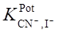
33. 5 分 (3561)
玻璃电极的膜电阻为108Ω，电极响应斜率为58mV/pH，测量时通过电池的回路电流 为1×10－12A，试计算因电压降所产生的测量误差相当于多少pH单位？
34. 5 分 (3562)
流动载体钾电极与饱和甘汞电极组成测量电池，以醋酸锂为盐桥，在1.0×10－2mol/L
氯化钠溶液中测得电池 电动势为60.0mV（钾电极为负极），在1.0×10－2
mol/L氯化钾溶液中测得电池电动势为90.8mV（钾电极为正极），钾电极的响应斜率为55.0mV/pK。计算 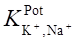
35. 5 分 (3563)
硫化银膜电极以银丝为内参比电极1.0×10－3mol/L硝酸银为内参比溶液，计算它在 1.0×10－4mol/LNa2S强碱性溶液中的电极电位，硫化银的Ksp＝6×10－50，E θA g/Ag＋＝0.7994 V，测量在25℃进行。
36. 5 分 (3564)
氟离子选择电极的内参比电极为Ag－AgCl，E θA g/AgCl=0.2223V。内参比溶液为
0.10mol/LNaCl和1.0×10－3mol/LNaF，计算它在1.0×－5mol/LF－，pH＝7的试液中，25oC时测量的电位值。 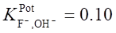
37. 5 分 (3565)
在100mLCa2＋溶液中添加0.100mol/LCa2＋标准溶液1.0mL后，电动势有4mV增加， 求原来溶液中的Ca2＋的浓度。（25oC）
38. 5 分 (3566)
在干净的烧杯中准确加入试液50.0mL，用铜离子选择电极（为正极）和另一个参比电极组成测量电池，测得其电动势 Ex＝-0.0225V。然后向试液中加入0.10mol/LCu2＋的标准溶液0.50mL（搅拌均匀），测得电动势E＝-0.0145V。计算原试液中Cu2＋的浓度。（25oC）
39. 5 分 (3567)
在下述电池中
（其中，a为“饱和”，x为未知）
银－氯化银参比电极电位E θ＝0.200V，而 Ag2C2O4↓+2e 2Ag↓+C2O42-
的E θ=0.470V，现测得该电池电动势为0.402V。计算未知液的pC2O4值。
40. 5 分 (3568)
Ca2＋选择电极为负极与另一参比电极组成电池，测得0.010mol/L的Ca2＋溶液的电动势为0.250V，同样情况下，测得未知钙离子溶液电动势为0.271V。两种溶液的离子强度相同，计算求未知Ca2＋溶液的浓度。
41. 5 分 (3569)
当下列电池中的溶液是pH=5.54的缓冲溶液时，在
25oC测得的电池电动势为0.203V。当缓冲溶液用未知液代替时，测得电动势为0.017V。
试计算未知液的pH值。
42. 5 分 (3570)
当下列电池中的溶液是pH=3.54的缓冲溶液，
在25oC测得的电池电动势为0.203V。当缓冲溶液用未知液代替时，测得电动势为 0.312V。试计算未知液的pH值。
43. 5 分 (3571)
某钠离子选择电极，其 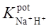
44. 5 分 (3572)
如果用溴离子选择电极测定pBr－=3.0溴离子活度，其中pCl－＝2.0，已知 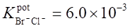
45. 5 分 (3573)
用氟离子选择电极测定某一含F－的试样溶液50.0mL，测得其电位为86.5mV。加入 5.00×10－2mol/L氟标准溶液0.50mL后测得其电位为68.0mV。已知该电极的实际斜 率为 59.0mV/pF，试求试样溶液中F－的含量为多少（mol/L）？
46. 5 分 (3574)
用pH=5.21的标准缓冲溶液，测得的电池
的电动势为0.209V。若用一未知液代替标准缓冲溶液，测得电动势为0.329V。试计算未知液的pH值。
47. 10 分 (3575)
以0.05mol/LAgNO3溶液为滴定剂，银丝为指示电极，饱和甘汞电极为参比电极，用电 位滴定法测得某水样中Cl－的浓度。已知25oC时银电极的标准电极电位为＋0.799V （VS.SHE），饱和甘汞电极的电位为+0.242V，氯化银的Ksp为1.80×10－10。试计算滴定终点时电位计的读数为多少？
48. 10 分 (3576)
一电池可由以下几种物质组成：银电极，未知Ag+溶液，盐桥，饱和KCl溶液，Hg2Cl2， Hg。
（1）把上列材料排成电池。
（2）哪一电极是参比电极？哪一电极是指示电极？盐桥的作用是什么？盐桥内应充什
么电解质？
（3）若银电极的电位比Hg的正，在25°C测得该电池的电动势为0.300V，试求未知
溶液中Ag＋的浓度为多少？（E θAg+,Ag=0.7994）
49. 10 分 (3577)
用硝酸根离子选择电极测定含有NO3－和HPO42－水样中的NO3－含量。
（1）写出测定时的电池的能斯特方程。
（2）若水样中HPO42－浓度为2.0mol/L，测定时要使HPO42－造成的误差小于2％，试估算待测的NO3－浓度至少应不低于多少？已知 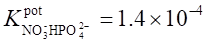
50. 10 分 (3580)
从含0.200mol/L Ni和 0.400 mol/L HClO4的100mL溶液中，将镍沉积在Pt阴极上， Pt阳极上放出O2。O2在电极上的过电位为1.30V。若通过电解池的电流维持在0.450A，电解池内阻为2.00Ω，Pt电极的面积为4.50cm2，已知j°Ni2+,Ni＝-0.250V，
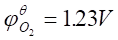
（1）理论分解电压；
（2）Ir降；
（3）开始电解所需的外加电压。
四、问答题 ( 共28题 )
1. 5 分 (3044)
导出通用电极涂 Ag2S 粉末的电极电势表达式为：
E = Eq(Ag+/Ag) + RT/F ln a��
2. 5 分 (4079)
简述使用甘汞电极的注意事项。
3. 5 分 (4080)
为什么测量一电池的电动势不能用一般的电压表？应用什么方法测量之？
4. 5 分 (4081)
试总结在各种方式的电位滴定中各用到哪些指示电极？为什么？
5. 5 分 (4087)
用离子选择性电极测定离子活度时，若使用标准加入法，试用一种最简单方法求出电极响应的实际斜率。
6. 5 分 (4088)
由 LaF3单晶膜制成的氟离子选择性电极，其内阻高达 0.15~5 MW，因此要设置内参比电极和内充溶液。试问理论上对内充溶液有何要求? 今以 Ag/AgCl 电极为内参比电极时，用于 LaF3单晶膜氟离子选择性电极的内充溶液组成如何？
7. 5 分 (4089)
若用pH玻离电极与饱和甘汞电极组成电池, 其电池电动势E与溶液pH间的关系可表示成 E = b+0.059pH，试回答：
(1) 写出该测量电池的表达式
(2) 用直读法测定时，要预先进行哪些调节？其目的何在？
8. 5 分 (4093)
一个离子选择电极的膜可示意如下：
b‘ a‘ a b
溶液 I│ 膜 │溶液 II
请说明这里三个 E (b‘, a‘)、E (a‘, a) 和 E (a , b) 属于哪一类的电位?
9. 5 分 (4095)
写出电位分析法、电重量分析法，控制电位库仑分析法、库仑滴定法、直流极谱法测定物理量和定量分析的理论公式。
10. 5 分 (4098)
原电池在放电时，正极就是阳极，负极就是阴极，这种说法对不对？为什么？
11. 5 分 (4099)
为什么普通玻璃电极不能用于测量 pH > 10 的溶液？
12. 5 分 (4112)
根据测量电化学电池的电学参数不同,将电化学分析方法可以分为哪几类不同的方法？
13. 5 分 (4113)
试举出两种常用的参比电极。写出半电池及电极电位表达式.
14. 5 分 (4114)
试说明用库仑法测定 As(Ⅲ) 时，双铂指示电极指示电解终点的原理。
15. 5 分 (4115)
现用氟离子选择电极法测定某试样中氟含量,在一般情况下，下列各离子 Cl-、Br-、I-、OH-、SO42-、HCO3-、Al3+ 、NO2-�辍�Fe3+中哪些有干扰？若有干扰，简单说明产生干扰的原因。加入总离子强度调节剂 (TISAB) 的作用是什么？
16. 5 分 (4662)
为了使测定误差小于0.1%，离子计的输入阻抗应为多少？为什么？设玻璃电极的膜电阻为108W。
17. 5 分 (4663)
写出离子选择电极与参比电极组成电池电动势的能斯特方程表示式，并说明各符号的含义。
18. 5 分 (4664)
根据1976年IUPUC推荐，离子选择性电极可分为几类，并举例说明。
19. 5 分 (4671)
什么是Donnan电位，为什么有稳定值？
20. 5 分 (4672)
什么是扩散电位，它有没有稳定的值？
21. 5 分 (4673)
石英和玻璃都有硅－氧键结构，为什么只有玻璃能制成pH玻璃电极？
22. 5 分 (4674)
用盐桥来降低液接电位时，对选用的电解质有什么要求，为什么？
23. 5 分 (4675)
简单说明电位法中校准曲线法的特点和适用范围？
24. 5 分 (4676)
简单说明电位法中标准加入法的特点和适用范围？
25. 5 分 (4677)
简述玻璃膜电极产生不对称电位的因素？
26. 5 分 (4678)
请设计一个方法，用氟离子选择电极，电位法测定某试样的游离氟和氟含量？
27. 5 分 (4679)
有人说，气敏电极“名不符实”，不是通常意义的电极，而是一种电池，为什么？
28. 5 分 (4680)
为什么离子选择电极的直接电位法测量误差与离子的价态有关？